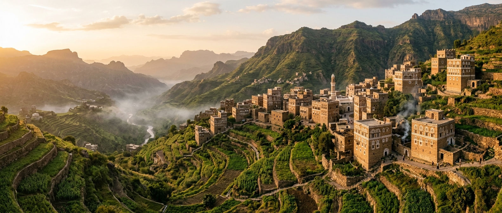
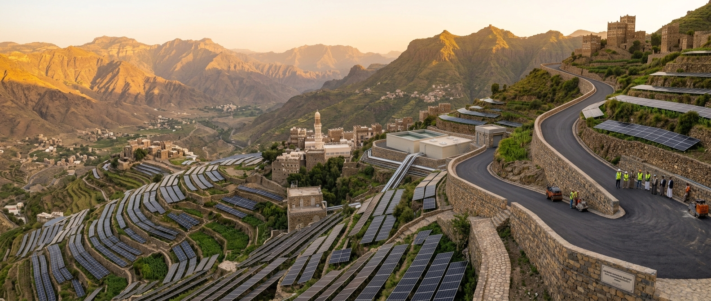
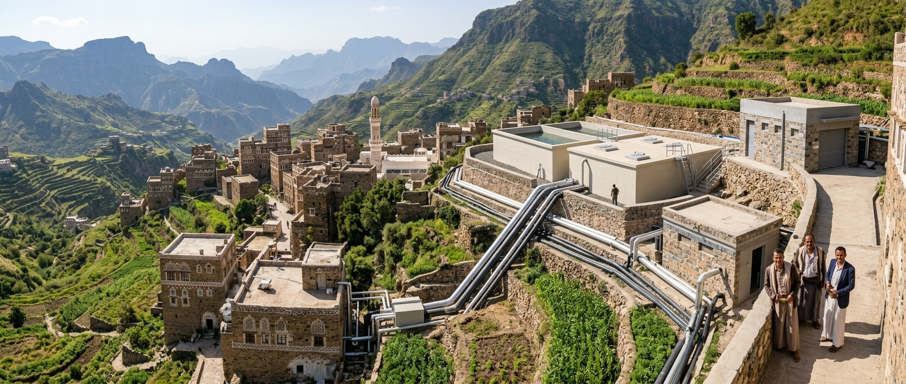
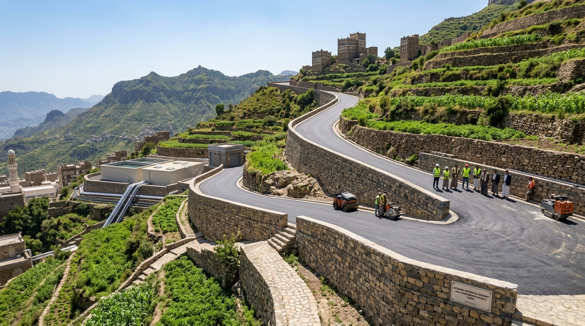
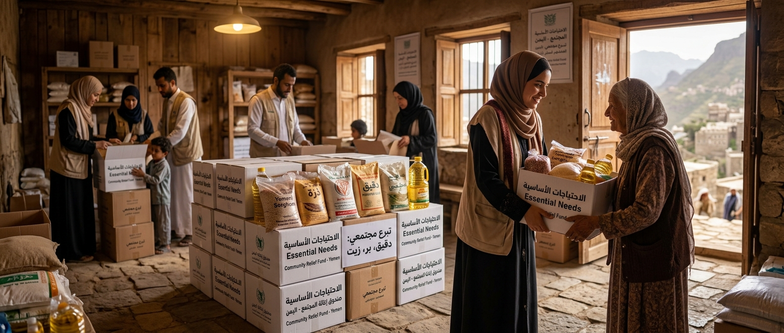
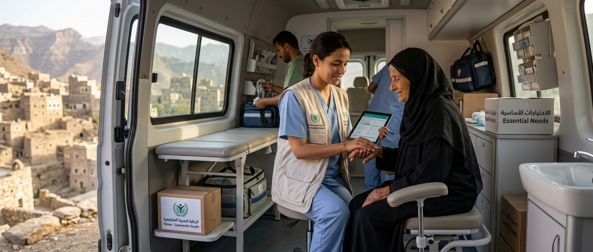
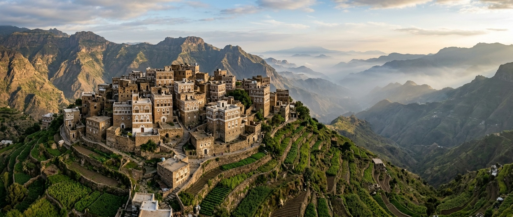
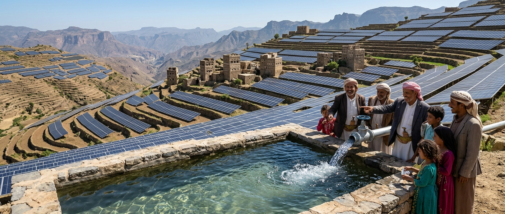
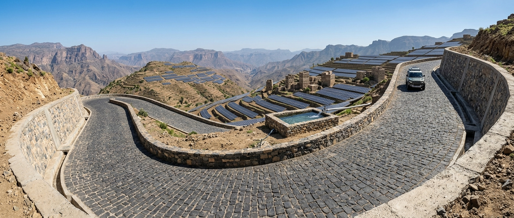
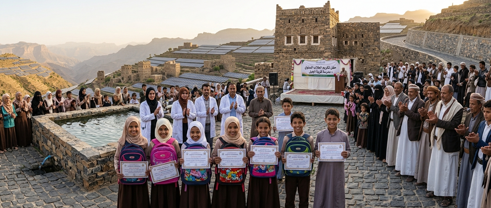

2323
م²
رصف حجري

صندوق المشاوز التكافلي التنموي
صندوق مجتمعي يهدف إلى دعم التنمية والتكافل الاجتماعي في قرية المشاوز بمحافظة تعز.
صندوق مجتمعي يهدف إلى دعم التنمية والتكافل الاجتماعي في قرية المشاوز بمحافظة تعز، اليمن.
نعمل على تنفيذ المبادرات والمشاريع التي تساهم في تحسين حياة أفراد المجتمع ودعم التنمية المستدامة في القرية.
اقرأ المزيد عن الصندوقرصف حجري
حقيبة مدرسية
شتلة زراعية
مبادرات ومشاريع تهدف إلى دعم التنمية وتحسين مستوى الحياة في قرية المشاوز.

توفير منظومات طاقة شمسية مستدامة لتشغيل المرافق الخدمية والآبار والإضاءة العامة، لتقليل التكاليف وضمان إمداد كهربائي مستمر يعتمد على الطاقة النظيفة لخدمة أبناء المجتمع.
اقرأ المزيد
مشروع تنموي يهدف إلى حفر الآبار وبناء خزان مائي رئيسي مع شبكة أنابيب حديثة لإيصال مياه الشرب النظيفة والآمنة لمنازل أهالي القرية والمناطق المجاورة، للحد من شح المياه ومعاناة نقلها الشاقة.
اقرأ المزيد
مشروع شق ورصف الطرق الوعرة بالحجارة وتأمين حوافها بمساند خرسانية لربط أطراف القرية والمناطق التابعة لها بالخطوط الرئيسية، مما يسهل التنقل ونقل البضائع والحالات الطارئة بأمان طوال العام.
اقرأ المزيدبرامج ومبادرات التكافل والمساعدات الاجتماعية لدعم أفراد المجتمع.

مبادرة تكافلية مستمرة تُعنى بتوفير وتوزيع المواد الغذائية الأساسية بشكل دوري للأسر الأكثر احتياجاً والأيتام، لتخفيف الأعباء المعيشية وضمان الاستقرار الغذائي للمجتمع.
اقرأ المزيد
صندوق تكافلي مخصص لتغطية تكاليف العلاج والأدوية وإجراء العمليات الجراحية الحرجة للمرضى غير القادرين، مع إقامة عيادات طبية ميدانية لتوفير الفحوصات الأساسية للأهالي.
اقرأ المزيد

افتتاخ وتشغيل مشروع الطاقة الشمسية لمشروع المياه، مما يضمن تدفق المياه النظيفة لأكثر من 350 أسرة بشكل مستدام.
اقرأ المزيد ←
تواصل أعمال الرصف الحجري بالأحجار البركانية للحد من مخاطر السيول وتسهيل تنقل المواطنين والمركبات.
اقرأ المزيد ←
تنظيم حفل تكريم سنوي للمبدعين والمتفوقين وتوزيع المستلزمات والحقائب المدرسية لتشجيع التعليم بالقرية.
اقرأ المزيد ←
المنصب
المنصب
المنصب
المنصب
نلتزم بالشفافية والحوكمة في إدارة الصندوق وتنفيذ المشاريع والمبادرات.
تعرف على الحوكمةمساهمتك تساعدنا على تنفيذ المزيد من المشاريع والمبادرات لخدمة مجتمع قرية المشاوز.
ساهم معنا